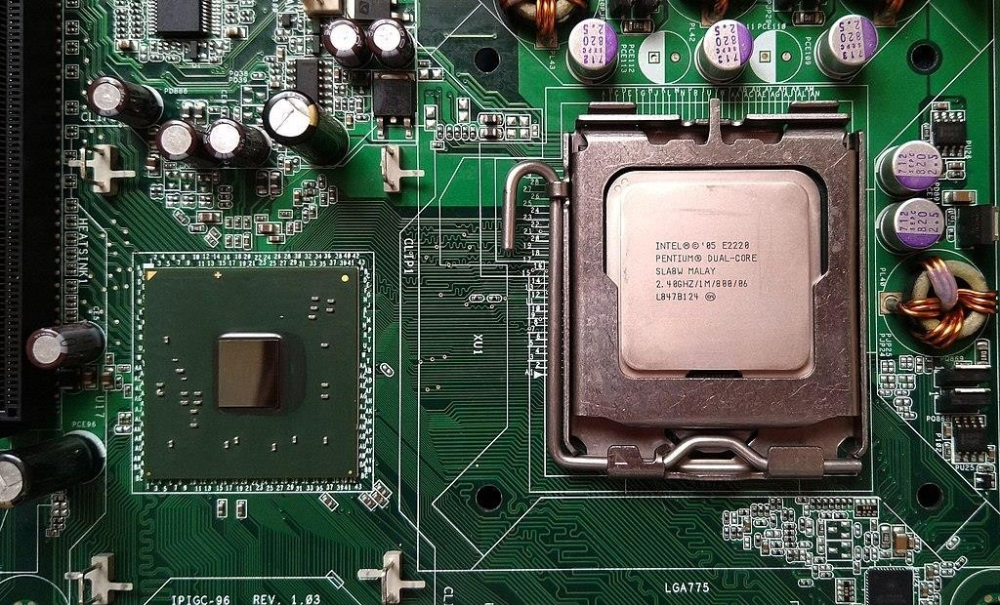
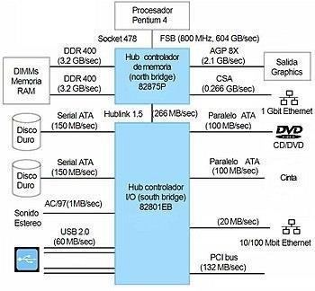
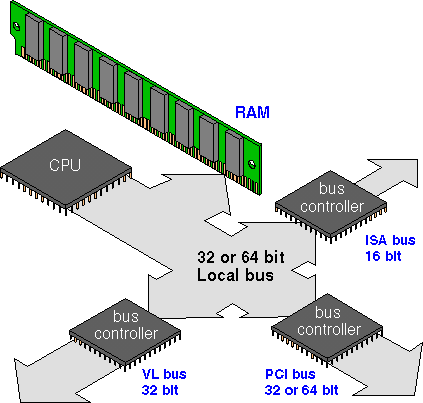
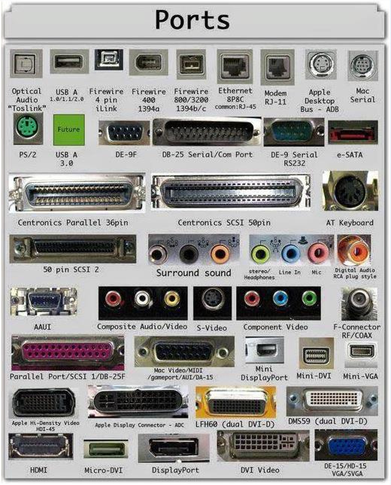
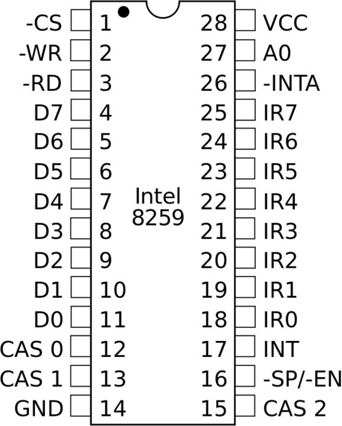
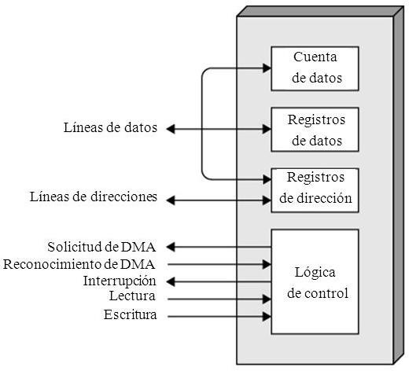
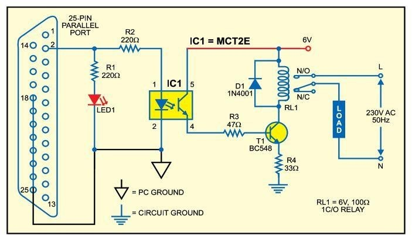
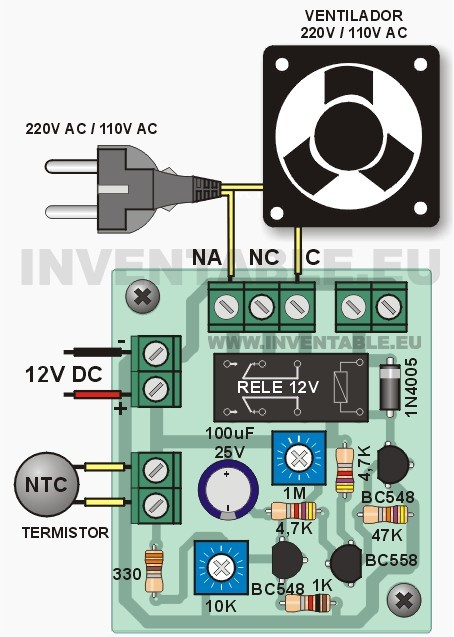
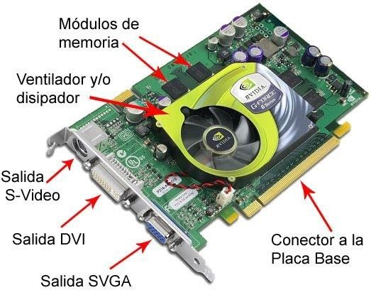
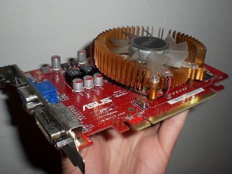

Un chipset es el conjunto de circuitos integrados diseñados con base
en la arquitectura de un procesador (en algunos casos, diseñados
como parte integral de esa arquitectura), permitiendo que ese tipo de
procesadores funcionen en una placa base. Sirven de puente de
comunicación con el resto de componentes de la placa, como son la
memoria, las tarjetas de expansión, los puertos USB, ratón, teclado,
etc.
Las placas base modernas suelen incluir dos integrados,
denominados puente norte y puente sur, y suelen ser los circuitos
integrados más grandes después de la GPU y el microprocesador.
Las últimas placa base carecen de puente norte, ya que los
procesadores de última generación lo llevan integrado.

- Funcionamiento.
El chipset es el que hace posible que la placa base funcione como
eje del sistema, dando soporte a varios componentes e
interconectándolos de forma que se comuniquen entre ellos haciendo
uso de diversos buses. Es uno de los pocos elementos que tiene
conexión directa con el procesador, gestiona la mayor parte de la
información que entra y sale por el bus principal del procesador, del
sistema de vídeo y muchas veces de la memoria RAM.
En el caso de los computadores PC, es un esquema de arquitectura
abierta que establece modularidad: el chipset debe tener interfaces
estándar para los demás dispositivos. Esto permite escoger entre
varios dispositivos estándar, por ejemplo, en el caso de los buses de
expansión, algunas tarjetas madre pueden tener bus PCI-Express y
soportar diversos tipos de tarjetas de distintos anchos de bus (1x, 8x,
16x).

La terminología de los integrados ha cambiado desde que se creó el
concepto del chip-set a principio de los años 1990, pero todavía
existe equivalencia haciendo algunas aclaraciones:
- Puente norte: northbridge, MCH (memory controller hub) o
GMCH (graphic MCH), se usa como puente de enlace entre el
microprocesador y la memoria. Controla las funciones de acceso
hacia y entre el microprocesador, la memoria RAM, el puerto
gráfico AGP o el PCI-Express de gráficos, y las comunicaciones con
el puente sur. Al principio tenía también el control de PCI, pero esa
funcionalidad ha pasado al puente sur.
- Puente sur: southbridge o ICH (input controller hub), controla los
dispositivos asociados como son la controladora de discos IDE,
puertos USB, FireWire, SATA, RAID, ranuras PCI, ranura AMR,
ranura CNR, puertos infrarrojos, disquetera, LAN, PCI-Express 1x y
una larga lista de todos los elementos que podamos imaginar
integrados en la placa madre. Es el encargado de comunicar el
procesador con el resto de los periféricos.
- Controlador del Bus.
El controlador del bus se encarga de la frecuencia de funcionamiento
y las señales de sincronismo, temporización y control. Está ubicado
en un chip en la placa base.
El bus es la vía a través de la que se van a transmitir y recibir todas
las comunicaciones, tanto internas como externas, del sistema
informático. El bus es solamente un dispositivo de transferencia de
información entre los componentes conectados a él, no almacena
información alguna en ningún momento. Los datos, en forma de
señal eléctrica, sólo permanecen en el bus el tiempo que necesitan en
recorrer la distancia entre los dos componentes implicados en la
transferencia.

- Puertas de Entrada Salida E/S.
Un puerto de E/S es un enchufe en una computadora al que se
conecta un cable. El puerto conecta la CPU a un dispositivo
periférico a través de una interfaz de hardware o a la red a través de
una interfaz de red.
En otras palabras, un puerto de E/S es un punto de conexión que
actúa como interfaz entre la computadora y dispositivos externos
como mouse, impresora, módem, etc. Estos son de dos tipos:
1. Puerto interno: conecta la placa base a dispositivos internos
como unidad de disco duro, unidad de CD, módem interno,
etc.
2. Puerto externo: conecta la placa base a dispositivos externos
como módem, mouse, impresora, unidades flash, etc.
- Puerto serial: los puertos seriales transmiten datos secuencialmente
un bit a la vez. Por lo tanto, solo necesitan un cable para transmitir 8
bits. Sin embargo, también los hace más lentos. Los puertos serie
suelen ser conectores macho de 9 o 25 pines. También se conocen
como puertos COM (comunicación) o puertos RS323C.
- Puerto paralelo: los puertos paralelos pueden enviar o recibir 8 bits
o 1 byte a la vez. Los puertos paralelos vienen en forma de pines
hembra de 25 pines y se utilizan para conectar impresoras,
escáneres, unidades de disco duro externas, etc.
- Puerto USB: USB son las siglas de Universal Serial Bus. Es el
estándar de la industria para la conexión de datos digitales de corta
distancia. El puerto USB es un puerto estandarizado para conectar
una variedad de dispositivos como impresora, cámara, teclado,
altavoz, etc.
- Puerto PS/2: PS/2 son las siglas de Personal System/2. Es un puerto
estándar hembra de 6 pines que se conecta al cable mini-DIN
macho. IBM introdujo PS/2 para conectar el mouse y el teclado a las
computadoras personales. Este puerto ahora está casi obsoleto,
aunque algunos sistemas compatibles con IBM pueden tener este
puerto.
- Puerto de infrarrojos: el puerto de infrarrojos es un puerto que
permite el intercambio inalámbrico de datos en un radio de 10 m.
Dos dispositivos que tienen puertos infrarrojos se colocan uno frente
al otro para que los haces de luces infrarrojas se puedan utilizar para
compartir datos.
- Puerto Bluetooth: Bluetooth es una especificación de
telecomunicaciones que facilita la conexión inalámbrica entre
teléfonos, computadoras y otros dispositivos digitales a través de
una conexión inalámbrica de corto alcance. El puerto Bluetooth
permite la sincronización entre dispositivos habilitados para
Bluetooth.
- Puerto FireWire: FireWire es el estándar de interfaz de Apple
Computer para permitir la comunicación de alta velocidad mediante
bus serie. También se llama IEEE 1394 y se usa principalmente para
dispositivos de audio y video como videocámaras digitales.

- Controlador de Interrupciones.
El controlador de interrupciones es un módulo que tiene por función
gestionar las interrupciones de entrada/salida para el procesador.
Esto ahorra diseñar lógica y añadir patitas al procesador. También
proporciona flexibilidad porque permite idealmente, gestionar un
número ilimitado señales de interrupción (favoreciendo la expansión
del sistema de entrada/salida).
El controlador recibe el conjunto de señales de interrupción
procedentes de los dispositivos, toma la decisión de cuál es la más
prioritaria, y envía una única señal al procesador. La respuesta del
procesador es transmitida al dispositivo y el propio controlador se
encarga de depositar en el bus el vector de la interrupción.
En un sistema basado en la familia de procesadores 8086, esta labor
la realiza el chip 8259. Este chip admite hasta 8 señales de
interrupción, pero también admite ser configurado en cascada (sus
entradas proceden a su vez de otro controlador) de modo que un
conjunto de controladores 8259 pueden gestionar hasta un máximo
de 8 x 8 señales de interrupción procedentes de otros tantos
dispositivos de entrada/salida.
- Ciclo de reconocimiento de interrupción.
1. Tras la activación de una línea IR, el controlador activa la
salida INTR señalándole a la CPU la existencia de una
interrupción activada.
2. Al recibir la señal, el procesador da un pulso en su salida
INTA indicando que comienza un ciclo de reconocimiento de
interrupción.
3. Al recibir el controlador el pulso por su entrada INTA
comienza a arbitrar las interrupciones recibidas y selecciona la
más prioritaria.
4. Se emite un segundo pulso por la línea INTA del procesador (o
controlador de bus) que utiliza el controlador para depositar en
el bus el vector correspondiente a la interrupción de mayor
prioridad.
5. El procesador obtiene la dirección de la rutina de interrupción
a partir de este dato y salta a ella. Almacena el registro de flags
y la dirección de retorno, deshabilita las interrupciones y
comienza a ejecutar la rutina.

- Controlador de Acceso Directo a Memoria (DMA).
El mecanismo de acceso directo a memoria está controlado por un
chip específico, el DMAC ("DMA Controller"), que permite realizar
estos intercambios sin apenas intervención del procesador. En los
XT estaba integrado en un chip 8237A que proporcionaba 4 canales
de 8 bits (puede mover solo 1 Byte cada vez); sus direcciones de
puerto son 000–00Fh. Posteriormente en los AT se instalaron dos de
estos integrados y las correspondientes líneas auxiliares en el bus de
control.
En contra de lo que podría parecer, el resultado no fue disponer de 8
canales, porque el segundo controlador se colgó en “Cascada” de la
línea 4 del primero. Los canales del segundo DMAC está asignado a
las direcciones 0C0–0DFh y son de 16 bits.

- Circuitos de temporización.
El circuito electrónico que más se utiliza tanto en la industria como
en circuitería comercial, es el circuito temporizador o de retardo,
dentro de la categoría de temporizadores, cabe destacar el más
económico y también menos preciso consistente en una resistencia y
un condensador, a partir de aquí se puede contar con un sinfín de
opciones.
Cuando necesitamos un temporizador, lo primero que debemos
considerar es la necesidad de precisión en el tiempo, base muy
importante para determinar los elementos que vamos a utilizar en su
concepción y diseño.

- Circuitos de Control.
Es una red secuencial que acepta un código que define la operación
que se va a ejecutar y luego prosigue a través de una secuencia de
estados, generando una correspondiente secuencia de señales
control.
Estas señales de control incluyen el control de lectura-escritura y
señales de dirección de memoria válida en el bus de control del
sistema. Otras señales generadas por el controlador se conectan a la
ALU y a los registros internos del procesador para regular el flujo de
información en el procesador y desde los buses de dirección y de
datos del sistema.

- Controladores de video.
La tarjeta de video, (también llamada controlador de video), es un
componente electrónico requerido para generar una señal de video
que se manda a una pantalla de video por medio de un cable. La
tarjeta de video se encuentra normalmente en la placa de sistema de
la computadora o en una placa de expansión. La tarjeta gráfica reúne
toda la información que debe visualizarse en pantalla y actúa como
interfaz entre el procesador y el monitor; la información es enviada a
éste por la placa luego de haberla recibido a través del sistema de
buses.
Una tarjeta gráfica se compone, básicamente, de un controlador de
video, de la memoria de pantalla o RAM video, y el generador de
caracteres, y en la actualidad también poseen un acelerador de
gráficos. El controlador de video va leyendo a intervalos la
información almacenada en la RAM video y la transfiere al monitor
en forma de señal de video; el número de veces por segundo que el
contenido de la RAM video es leído y transmitido al monitor en
forma de señal de video se conoce como frecuencia de refresco de la
pantalla.

- Tipos de placas de videos.
*Adaptador de Pantalla Monocromo (MDA): los primeros PC solo
visualizaban textos. El MDA contaba con 4KB de memoria de video
RAM que le permitía mostrar 25 líneas de 80 caracteres cada una
con una resolución de 14x9 puntos por carácter.
*Tarjeta gráfica Hércules: con esta tarjeta se podía visualizar
gráficos y textos simultáneamente. En modo texto, soportaba una
resolución de 80x25 puntos. En tanto que en los gráficos lo hacía
con 720x350 puntos, dicha tarjeta servía sólo para gráficos de un
solo color. La tarjeta Hércules tenía una capacidad total de 64k de
memoria video RAM. Poseía una frecuencia de refresco de la
pantalla de 50HZ.
*Color Graphics Adapter (CGA): la CGA utiliza el mismo chip que
la Hércules y aporta resoluciones y colores distintos. Los tres
colores primarios se combinan digitalmente formando un máximo de
ocho colores distintos. La resolución varía considerablemente según
el modo de gráficos que se esté utilizando.
*La tarjeta EGA: Enchanced Graphics Adapter (EGA). Se trata de
una tarjeta gráfica superior a la CGA. En el modo texto ofrece una
resolución de 14x18 puntos y en el modo gráfico dos resoluciones
diferentes de 640x200 y 640x350 a 4 bits, lo que da como resultado
una paleta de 16 colores, siempre y cuando la tarjeta esté equipada
con 256KB de memoria de video RAM.
*La tarjeta VGA: la Video Graphics Adapter (VGA) significó la
aparición de un nuevo estándar del mercado. Esta tarjeta ofrece una
paleta de 256 colores, dando como resultado imágenes de colores
mucho más vivos. Las primeras VGA contaban con 256KB de
memoria y solo podían alcanzar una resolución de 320x200 puntos
con la cantidad de colores mencionados anteriormente.
*La tarjeta SVGA: la tarjeta SVGA (Super Video Graphics
Adapter) contiene conjuntos de chips de uso especial, y más
memoria, lo que aumenta la cantidad de colores y la resolución.
*El acelerador gráfico: el acelerador gráfico se encarga de realizar
una serie de funciones relacionadas con la presentación de gráficos
en la pantalla, que, de otro modo, tendría que realizar el procesador.
De esta manera, le quita tareas de encima a este último, y así se
puede dedicar casi exclusivamente al proceso de datos.
*El coprocesador gráfico: posteriormente, para lograr una mayor
velocidad se comenzaron a instalar en las tarjetas de video otros
circuitos especializados en el proceso de comandos gráficos,
llamados coprocesadores gráficos. Se encuentran especializados en
la ejecución de una serie de instrucciones específicas de generación
de gráficos.
*Aceleradores gráficos 3D: los gráficos en tres dimensiones son una
representación gráfica de una escena o un objeto a lo largo de tres
ejes de referencia, X, Y, Z, que marcan el ancho, el alto y la
profundidad de ese gráfico. Para manejar un gráfico tridimensional,
éste se divide en una serie de puntos o vértices, en forma de
coordenadas, que se almacenan en la memoria RAM.

|